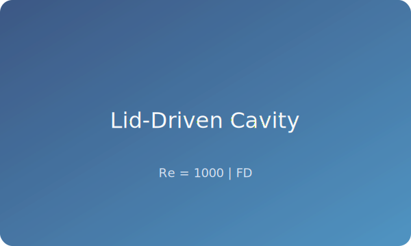
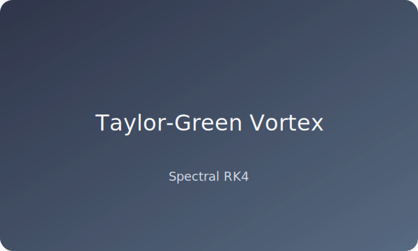
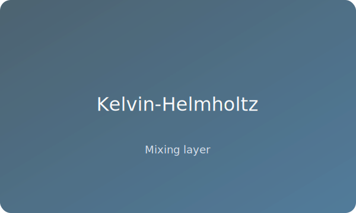
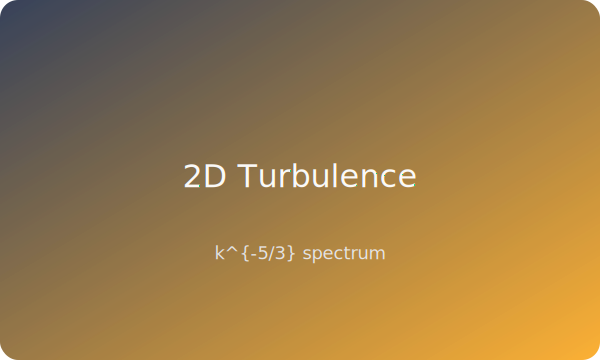

A curated showcase of simulations produced with Navier-Stokes Solvers. Replace the placeholder SVGs under docs/assets/images/ with high-resolution renders for production deployments.

./bin/ns_fd_solver --re 1000 --nx 192 --ny 192 --steps 8000 \
--output results/fd_re1000.dat
python scripts/plot_solution.py results/fd_re1000.dat -o figures/fd_re1000

./bin/ns_spectral_solver --config configs/taylor_green.yml
python scripts/energy_spectrum.py results/spectral_final_solution.dat \
-o figures/taylor_green_spectrum.png

./bin/ns_spectral_solver --config configs/shear_layer.yml
python scripts/animate_flow.py "results/shear_layer_step_*.dat" \
-o figures/shear_layer.gif --fps 24

./bin/ns_spectral_solver --config configs/turbulence_forced.yml
python scripts/energy_spectrum.py results/spectral_final_solution.dat \
-o figures/turbulence_spectrum.png
For additional validation figures and data tables see Benchmark Results.